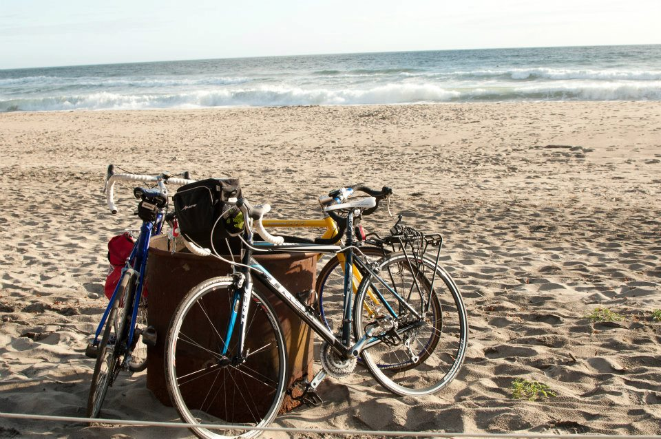
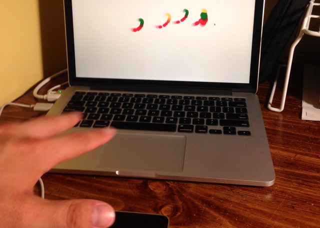
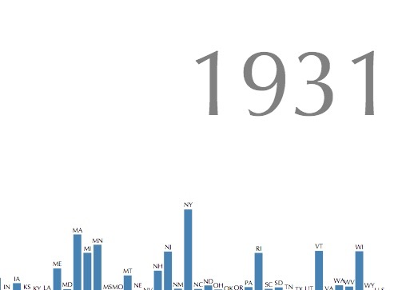
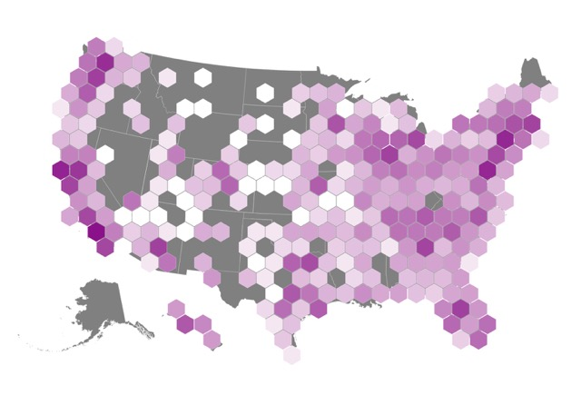
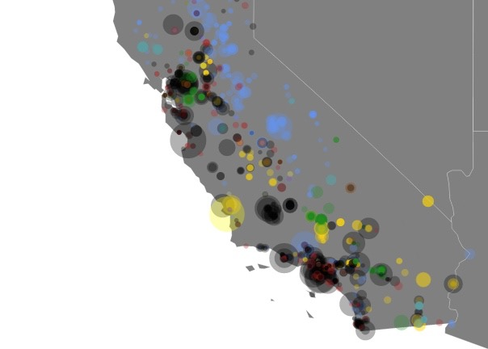

hello!

I am a senior at the University of Vermont majoring in mathematics and statistics and minoring in computer science.
My interests lie in the utilization of the incredible power that modern data affords us to help better the world.
I don't think that one should need a degree in a STEM field to be able to benefit from this data. Due to this, one of my main interests is visualizing data to accurately reflect the underlying trends without all of the fluff that data scientists love to layer on.
When I am not in "school mode" I love to bike places and appreciate architecture whilst doing so.
Have a fantastic day!
resume
Nicholas James Strayer:
Education:
University of Vermont, Burlington VT:
- B.S. in mathematics and statistics with a minor in computer science, Honors College.
- Expected graduation: May, 2015.
- GPA: 3.8/4.0
Experience:
- Software Engineering Intern, Mission Control Technologies, Carpinteria, CA [Summer 2014]:
- Self directed project to bring the latest JavaScript visualization technologies to the company's main software platform.
- Fully envisioned, prototyped and implemented new data visualization framework in the course of one month.
- Constructed training protocol for rapidly bringing third parties up to speed with new protocol.
- Human Computer Interaction Researcher, LabInTheWild (University of Michigan) [Summer 2014]:
- In charge of developing and implementing interactive data visualizations to help users compare themselves to other demographics.
- Undergraduate Researcher, Rubenstein Lab [2013 to Pres.]:
- Analyzed and visualized data for CATOS fish tracking project.
- Head of data mining project to establish temporal trends in population densities of Mysis diluviana.
- Running project to mathematically model the migration patterns of Mysis diluviana (honors thesis project.)
- Undergraduate Researcher, Bentil Laboratory [2013 to Pres.]:
- Developing mathematical model to predict the transport of sulfur through the environment with applications in waste cleanup.
- Research Assistant, Adair Laboratory [2012 to '13']:
- Independently analyzed and constructed statistical models for large data sets pertaining to carbon decomposition rates.
- Mathematics, Statistics and Chemistry Tutor, University of Vermont [2013 to Pres.]:
- Tutor students seeking assistance in introductory to intermediate classes.
- Computer Technician Intern, Logic Supply, Burlington, VT [2012 to '13]:
- Involved in all roles of assembly and stress testing of computer systems.
- Baker, Zingerman's Bakehouse, Ann Arbor, MI [2009 to '12]:
- Responsible for production of bread in all stages.
- Trained new employees.
- Founding Member and Treasurer, UVM Olympic Weightlifting Team:
- Co-founded UVM's first weightlifting club sports team.
- Responsible for design and implementation of $20,000+ budget.
Technical Skills:
Experienced with the following:
Experience level: * (weak), ** (medium), *** (strong)
- Programming Languages:
- Python ***
- JavaScript ***
- JQuery ***
- Angular.js *
- D3.js ***
- Matlab ***
- R ***
- php *
- Swift *
- Technical Writing:
- HTML ***
- LateX ***
- Software:
- Microsoft Office Suite ***
- Adobe Creative Suite **
- JMP ***
Honors and Scholarships:
- One of three Nominated for Goldwater Scholarship national level, Presidential Scholarship, Honors College Dean's Scholarship, URECA summer research scholarship, UVM Office of Undergraduate Research Summer Mini Grant recipient, and James Buxton Scholarship.
projects

|
Learn ASL numbers with Leap Motion.
|
|  |
Experimental Leap Motion + D3.js project.
|
|  |
Polio's impact on the United States.
|

|
labinthewild.org Interactive Visualization.
|
|  |
Alternative energy filling stations in the U.S..
|

|
|
|  |
Where does California get its energy?
|
contact
I am always interested in getting involved in new projects or just connecting with others. Feel free to get in touch!
email: nstrayer (at) uvm.edu
twitter: @NicholasStrayer
github: nstrayer